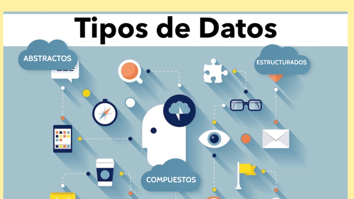

Explora los conceptos fundamentales de la programación de manera visual e intuitiva.
Ver Glosario →
Memoria contigua con acceso O(1) por índice. Base de muchas estructuras.

LIFO: Último en entrar, primero en salir. Usado en deshacer/rehacer.
FIFO: Primero en entrar, primero en salir. Usado en sistemas de espera.
Nodos conectados por enlaces. Singly, Doubly y Circular.
Estructura jerárquica. BST, AVL y árboles completos.
Técnica donde una función se llama a sí misma para resolver problemas.